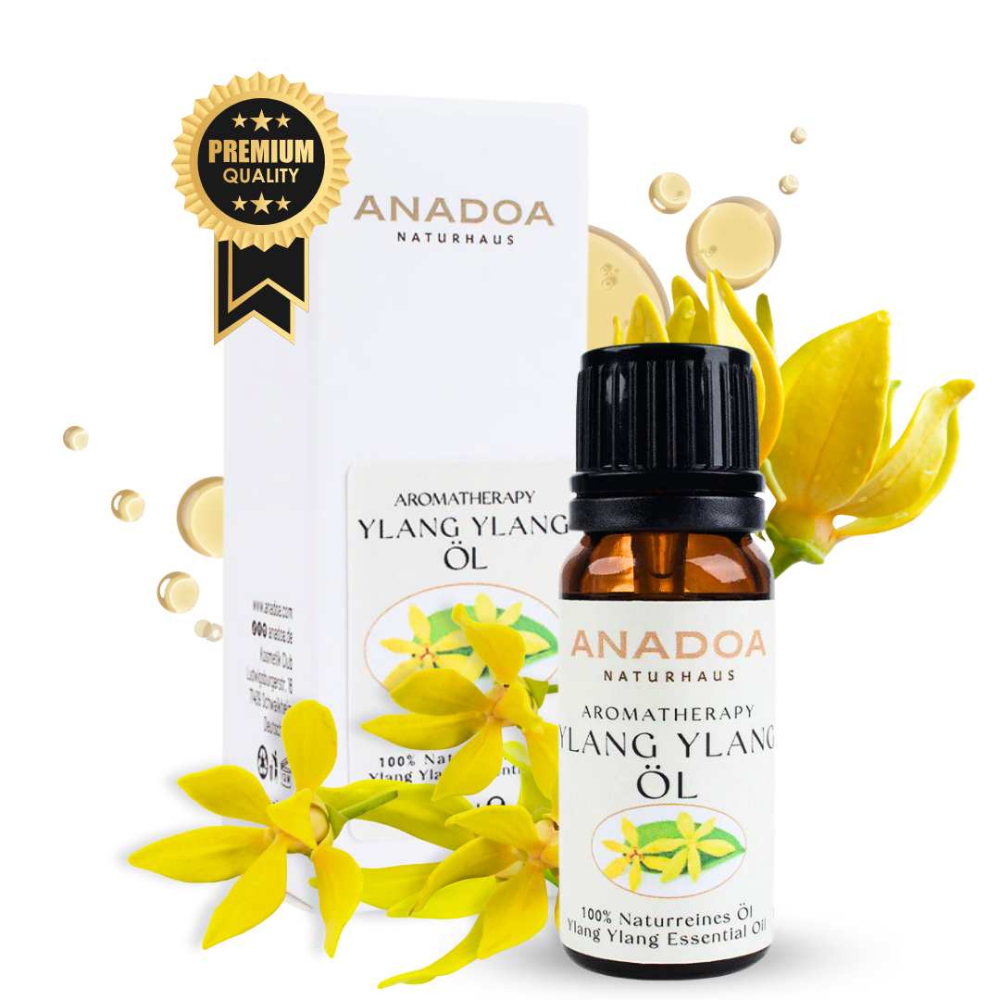

Was ist Ylang-Ylang-Öl?
Ylang-Ylang-Öl, destilliert aus den sternförmigen, intensiv duftenden Blüten des Cananga-Baumes, ist die 'Blume der Blumen'. Sein Duft ist legendär: Betörend süß, exotisch, schwer, sinnlich und extrem feminin. Es ist die Herznote vieler weltberühmter Luxusparfüms (z.B. Chanel No. 5).
In der Aromatherapie ist Ylang-Ylang das absolute Öl der extremen Entspannung. Wenn der Körper durch Stress, Wut oder Panik unter Hochspannung steht, senkt Ylang-Ylang das Adrenalin, verlangsamt den Herzschlag und hüllt die Seele in eine schwere, tröstende Decke der Gelassenheit.
Wo und wie wird Ylang-Ylang geerntet?
Der Cananga-Baum (Cananga odorata) wächst in den tropischen Regenwäldern Südostasiens. Die weltweit höchste Qualität dieses Öls stammt von den Komoren-Inseln und aus Madagaskar im Indischen Ozean. Das dortige heiße, feuchte Klima bringt die süßesten und komplexesten Blüten hervor.
Die Ernte ist eine extrem zeitkritische Handarbeit. Die gelben Blüten dürfen nur am frühen Morgen gepflückt werden, wenn ihr ätherischer Ölgehalt am höchsten ist. Sobald die Tropensonne zu heiß wird, verliert die Blüte ihren Duft. Die zarten Blütenblätter dürfen beim Pflücken nicht gequetscht werden, sonst beginnen sie zu gären.
Die Kunst der Fraktionierten Destillation
Ylang-Ylang wird auf eine einzigartige Weise destilliert: Durch 'fraktionierte Destillation'. Der Prozess dauert oft bis zu 24 Stunden, wird aber in Etappen abgezapft:
- Ylang-Ylang Extra (Stunde 1-2): Die feinsten, teuersten Ester destillieren zuerst. Dieser Bruchteil wird von der Luxus-Parfümindustrie aufgekauft.
- Ylang I, II, III (Stunde 3-24): Je länger destilliert wird, desto schwerere Sesquiterpene kommen ins Öl. Der Duft wird erdiger und medizinischer.
- Ylang-Ylang Complete (Totum): Die Destillation wird nicht unterbrochen, oder alle Stufen werden später wieder zusammengefügt. Dies ist das Öl für die Aromatherapie, da es alle therapeutischen Moleküle enthält.
Biochemie: Die Wirkstoffe im Ylang-Ylang-Öl
Das Molekülprofil ist extrem komplex, was den vielschichtigen Duft erklärt:
- Linalool (15 - 25%) & Benzylacetat: Die floralen, stark beruhigenden und angstlösenden Komponenten.
- Germacren D (Sesquiterpen): Sorgt für die extrem erdende, blutdrucksenkende und krampflösende Wirkung.
- Caryophyllen: Wirkt stark entzündungshemmend.
Woran erkennen Sie 100% naturreines Ylang-Ylang-Öl?
Ein echtes Ylang-Ylang-Öl ist ein Erlebnis:
- Destillations-Grad: Seriöse Marken geben an, ob es sich um 'Extra', 'Complete' oder 'Qualität III' handelt. 'Complete' ist für die Heilkunde optimal.
- Botanischer Name: Es muss 'Cananga odorata' sein. Vorsicht vor der billigen 'Cananga-Öl' Variante (Cananga odorata var. macrophylla), die viel rauer und seifiger riecht.
- Der Dufttest: Synthetisches Ylang-Ylang riecht oft nach billigem Bananenkaugummi. Echtes Öl ist blumig, tief, exotisch und fast narkotisierend.
Anwendung: Ylang-Ylang richtig mischen und nutzen
Ylang-Ylang ist extrem potent – dosieren Sie es mit Vorsicht:
- Das aphrodisierende Massageöl: 2 Tropfen Ylang-Ylang + 3 Tropfen Orangenöl in 30 ml Mandelöl. Löst tiefe Verspannungen und weckt die Sinne.
- Bei Herzrasen und Panik (Tachykardie): 1 Tropfen Ylang-Ylang pur auf die Handgelenke oder ein Taschentuch geben und tief einatmen. Es senkt nachweislich den Blutdruck.
- Haar-Glanz Serum: 2 Tropfen in 10 ml Kokosöl mischen und in die trockenen Haarspitzen kneten. Der Duft hält tagelang und die Haare glänzen exotisch.
Sicherheit und häufige Anwendungsfehler bei Ylang-Ylang
Hinweis: Die Dosis macht das Gift:
- Kopfschmerz-Gefahr: Überdosierung im Diffuser (mehr als 2 Tropfen) führt durch den narkotischen Duft extrem schnell zu Kopfschmerzen, Schwindel und Übelkeit. Mischen Sie es am besten immer mit frischen Zitrusölen (Zitrone, Orange), um die schwere Süße aufzubrechen.
- Niedriger Blutdruck: Menschen mit chronisch niedrigem Blutdruck (Hypotonie) sollten Ylang-Ylang meiden, da es den Blutdruck noch weiter absenken kann, was zu Schwindel führt.
Bewährte Aromatherapie-Mischungen mit Ylang-Ylang
Ylang-Ylang braucht Frische als Gegengewicht:
- Die 'Sinnliche Harmonie' Diffuser-Mischung: 1 Tropfen Ylang-Ylang + 4 Tropfen Bergamotteöl. Perfekt für ein romantisches Abendessen.
- Die 'Tiefe Entspannung' Bademischung: 2 Tropfen Ylang-Ylang + 3 Tropfen Lavendelöl (in Sahne emulgiert) ins heiße Badewasser geben.
- Das 'Trauma-Release' Roll-On: 1 Tropfen Ylang-Ylang + 2 Tropfen Weihrauchöl in 10 ml Jojobaöl. Auf das Herz-Chakra auftragen.
Häufig gestellte Fragen zu Ylang-Ylang
Warum
verursacht Ylang-Ylang-Öl Kopfschmerzen?
Ylang-Ylang-Öl (Cananga odorata) hat einen extrem schweren, süßen und narkotisierenden Blütenduft. Eine Überdosierung führt sehr schnell zu Kopfschmerzen und Übelkeit. Ein einziger Tropfen reicht meist für den ganzen Raum. Weniger ist hier definitiv mehr!
Gilt
Ylang-Ylang wirklich als Aphrodisiakum?
Ja. In der Aromatherapie ist Ylang-Ylang das bekannteste aphrodisierende Öl. Es baut sexuelle Hemmungen und Ängste ab, entspannt massiv und weckt die Sinnlichkeit. In Indonesien werden die Blüten traditionell auf das Bett von frisch Vermählten gestreut.
Was
bedeutet 'Ylang-Ylang Extra' oder 'Complete'?
Das Öl wird in Fraktionen (Stufen) destilliert. 'Extra' ist die erste Stunde der Destillation und enthält die feinsten, flüchtigsten floralen Noten (perfekt für teure Parfüms). Die Nummern I, II und III sind spätere Phasen. Ein 'Complete' (oder 'Totum') ist das ununterbrochen destillierte Gesamtöl, das die volle therapeutische Bandbreite aufweist.
Hilft
Ylang-Ylang bei hohem Blutdruck?
Ja. Ylang-Ylang ist eines der wenigen Öle, die nachweislich den Blutdruck senken und Tachykardie (Herzrasen) bei Stress und Panikattacken extrem schnell beruhigen können. Es wirkt stark sedierend auf das zentrale Nervensystem.
Ist
Ylang-Ylang gut für die Haut?
Sehr gut. Es ist eines der wenigen Öle, das die Talgproduktion der Haut ausgleicht (sowohl bei zu trockener als auch bei extrem fettiger Haut). Ein Tropfen in der Gesichtscreme sorgt für ein ausgeglichenes Hautbild.